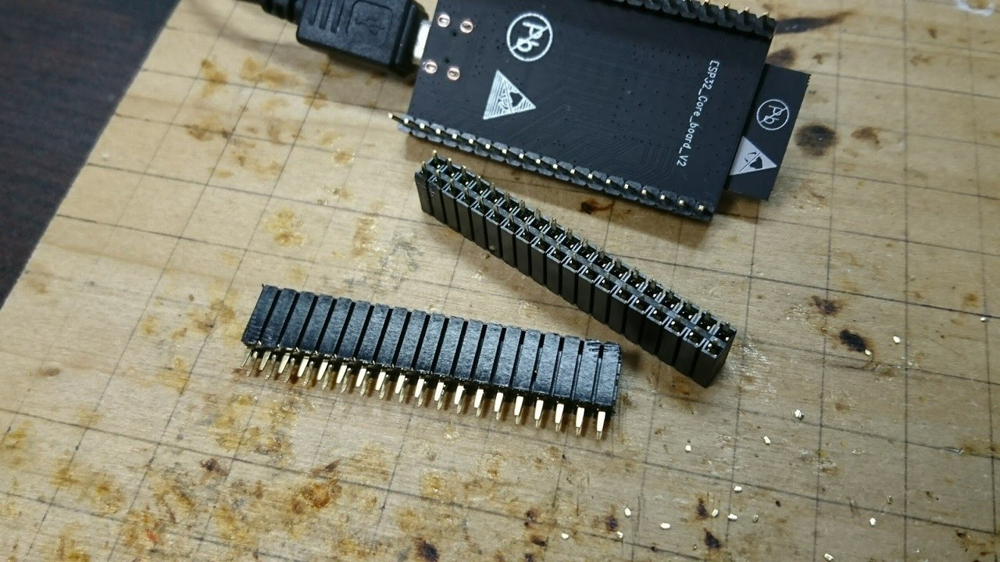
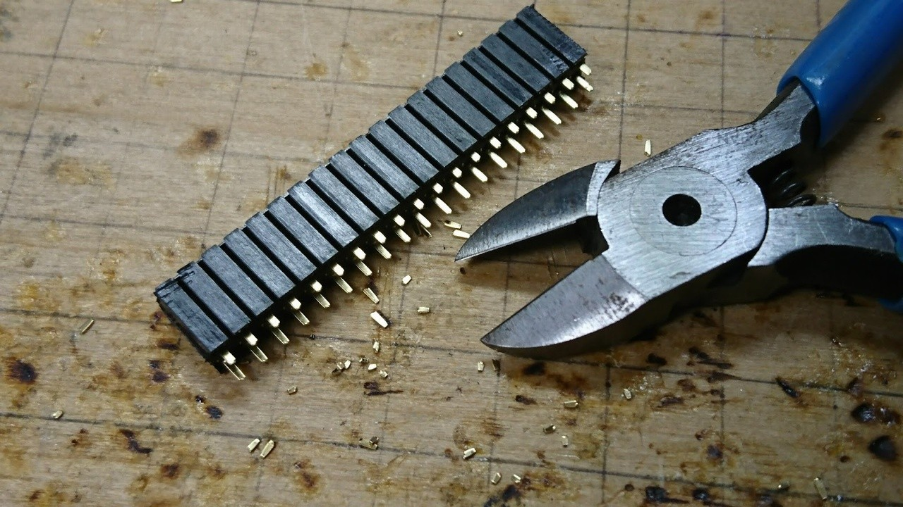
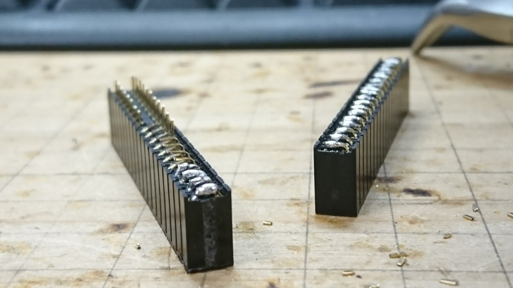
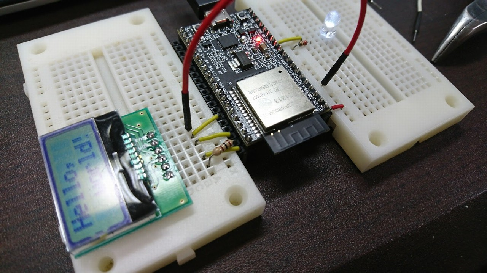

[メモ] ESP32 DevKitCをブレッドボードで扱いやすくする
2018/02/02 |
記事のソース
ESP32 DevKitCはボードそのものは使いやすいが、幅が広く、ピンヘッダが太いため ブレッドボードでのプロトタイピングには向かないようだ。 そこで、2列のピンソケットを使ってブレッドボードと簡単に接続できるようにしてみた。 手順は以下の通り。
-
2列のピンソケットをESP32 DevKitCのピンヘッダと同じ長さだけ切り出す。

-
ピンを短く切る。

-
内側に折り曲げてはんだ付けし、2列の隣り合うピンをショートさせる。

-
ESP32 DevKitCのピンヘッダに取り付ける。

ブレッドボードとジャンパ線を使って繋げられるようになった。 ブレッドボードに直接挿した場合と違い、必要なポートのみ引き出せるため、 配線自由度が高い。